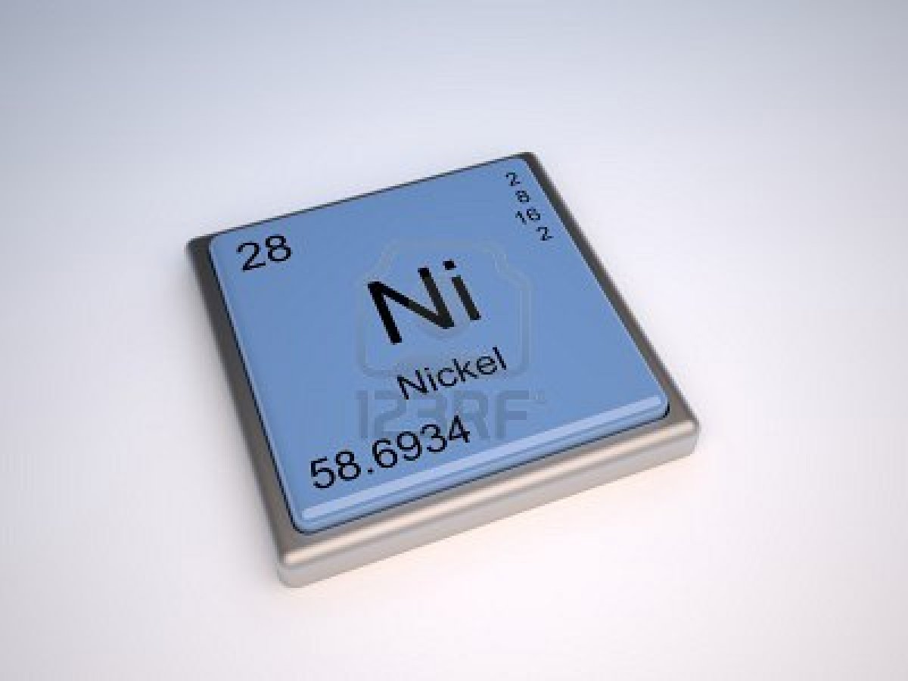

NIQUEL:

El uso del níquel se remonta aproximadamente al siglo IV a. C., generalmente junto con el cobre, ya que aparece con frecuencia en los minerales de este metal. Bronces originarios de la actual Siria tienen contenidos de níquel superiores al 2%. Manuscritos chinos sugieren que el «cobre blanco» se utilizaba en Oriente hacia 1700 al 1400 a. C.; sin embargo, la facilidad de confundir las menas de níquel con las de plata induce a pensar que en realidad el uso del níquel fue posterior, hacia el siglo IV a. C
 Ir a página principal
Ir a página principal